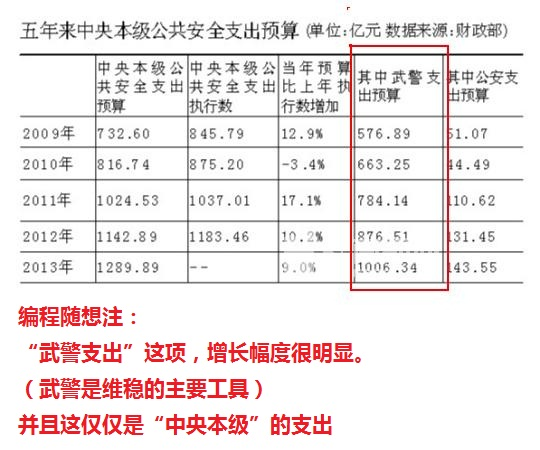

最近几个月，网上流传一份《中国社会最新阶层划分：看看你在第几层？》。可能某些读者已经看过了。针对还没看过的同学，先转载如下，然后再附上俺的点评。
以下是俺的点评
首先剽窃一下影片《让子弹飞》的台词——
邓小平的大儿子邓朴方创办了“大康华”（80年的十大官倒公司之首）。你相信这是巧合吗？
李鹏的老婆（朱琳）、儿子（李小鹏）、女儿（李小琳）都曾经担任过电力行业的高官、大股东（这三人的职务都是公开可查的）。你相信这是巧合吗？
江泽民的大儿子江绵恒，年纪轻轻就当上中国科学院副院长。你相信这是巧合吗？
江绵恒担任法人代表的“上海联和投资有限公司”，投资了非常多的大公司（比如中国网通、上汽集团、上海机场集团、凤凰卫视、宏力半导体、等）。你相信这是巧合吗？
温家宝的老婆张培莉是全国知名的珠宝品牌“戴梦得”的老板，号称“珠宝女王”。你相信这是巧合吗？
温影帝没当上总理之前，他儿子温云松还默默无闻；2002年之后，温云松突然就变成金融大亨（掌控上百亿的私募——新天域资本）。你相信这是巧合吗？
习近平外甥女张燕南，在香港购置多处豪宅，比如2009年以一次性付款1.5亿港币购入浅水湾豪宅（BBC 的报道在“这里”）。你相信这是巧合吗？
最后来说说名声不算太差的朱镕基。他儿子朱云来被王岐山提拔到中金公司（天朝第一家投行）当董事长，年薪折合美金1700万（《金融时报》的报道在“这里”）。至于股权，他拿到的可能更多。你相信这是巧合吗？
既然说到王岐山（东厂王公公），再顺便抹黑一下：这家伙近期高调反腐，骗取了很多人的眼球。但是他敢动上述这些大权贵的家族吗？他如果不是姚依林（80年代常委）的女婿，他能一路升到政治局常委吗？
（上述只是简单列举，太子党绝对不止这几个家伙。想知道更多太子党的资料，请看俺整理的《太子党关系网络》）
看完上面这些，你不妨再回味一下当年总设计师邓矬子高调鼓吹的：
其实俺不反对“让一部分人先富起来”，如果某个人靠自己的努力，靠自己的聪明才智，甚至靠自己的运气，并且是通过合法途径，赚取大量财富，这无可厚非。但是你相信那些发迹的太子党，个个都是聪明过人，个个都能力超常吗？
所以，邓小平那句话的要害在于，缺少了一个定语——“在确保公平的前提下”。不强调“公平”，只强调“先富”，最后的结果就是——天朝沦为【权贵资本主义社会】。
那怎样才能有公平捏？有些天真的网友还在幻想，指望那些身处第1等级的大权贵来搞改良（政治体制改革）。
俺来帮这些天真的同学分析一下：如果真的有政治体制改革，首当其冲就是第1第2等级的那帮家伙——他们的特权首先就会被拿掉。没了特权的权贵就是“脱毛的凤凰不如鸡”，你觉得他们会傻到断送自己的锦绣前程？
所以，不要听信朝廷近期鼓吹的“自上而下”的所谓顶层设计，那都是忽悠你滴！要真的实现成熟的民主化，只能靠“自下而上”的政治变革。俺本人寄希望于“非暴力革命”。更多介绍请看《谈革命》系列。
再来说说流动性。所谓的流动性指的是阶层之间的流动性。
在一个正常的社会，阶层之间必然有一定的流动性。能力出众者有希望升入更高的阶层。而能力糟糕的人可能会被降级。
但是在咱们这个奇葩的国度，很多层级之间都是巨大的鸿沟。能够有幸越过鸿沟晋升的人，真的是很少很少。尤其是第3级和第4级之间的鸿沟，或许只有千万分之一的人能越过。前面那篇文中提到的“二马”（马云＆马化腾）可算是越过鸿沟的例子。但这样的例子，全国能有几个？而且“二马”有没有巴结过权贵，也不好说哦。
再来分享几篇报道：
《北京小升初共建生内幕——权力部门子弟一比一录取 @ 搜狐》（网页存档）
《父母官职对大学毕业生第一份工作起薪有显著影响 @ Solidot》（网页存档）
从上述这些报道可以看出——阶层的【世袭性】越来越明显。底层的人，其子女很可能还是留在底层。因为他们根本没有后台，没有关系网。而各种资源都被有后台有关系网的人瓜分干净，不可能再留给底层的人。
天朝的社会阶层，不光是流动性差，而且稳定性也差。
为了说明稳定性差，俺举几个例子：
举例1
大概从邓小平开始，朝廷就经常把“稳定压倒一切”挂在嘴边。为啥朝廷反复强调“稳定”，恰恰是因为咱们党国很不稳定。像那些成熟的民主国家，就不会天天喊着要“稳定”。
举例2
最近十多年来，天朝的维稳费用持续走高，据外媒报道已经连续多年超越军费开支。维稳费用的猛涨，充分反映出逐年增加的大规模群体事件。
针对外媒的报道，党国财政部有辟谣，说“不存在维稳费用，而是公共安全支出”。俺再贴另一篇文章，是《经济观察报》反驳官方财政部的辟谣。
《维稳费用的另外一个名字 @ 经济观察报》（网页存档）
考虑到《经济观察报》位于墙内，可能会被真理部和谐掉。再补充一篇【海外网站】的报道，来自 RFA（自由亚洲电台），链接在“这里”。
本文发出后，有网友在博客留言，对俺进行质疑（希望能给出有说服力的数据）。所以俺再补充如下数据（为了防止五毛说俺造谣，数据都来自【朝廷财政部】）
《2010年全国公共财政支出基本情况 @ 天朝财政部官网》
《2011年公共财政收支情况 @ 天朝财政部官网》
另找来一张截图，包括2009年至2013年的“武警支出预算”。

为啥“公共安全支出”逐年上升？而且增速超军费增速？虽然财政部辩解说，“公共安全支出”包括了好几个部分（上述引文有列出）。但是最有可能导致开支猛增的，也就是只有“维护公共安全和社会稳定”这一项了。
如果上述推理成立，那么天朝的稳定性，就处于一种“越来越差”的趋势中——所以维稳费用才持续走高。既然是“越来越差”，那么当稳定性差到一定程度，现有的阶层模型就有可能发生崩溃然后重组（说通俗点就是“重新洗牌”）。这可不是俺故意耸人听闻——连党国官方媒体自己都承认这点。
早在十八大之前，就有小道消息称：王岐山在私下场合向周围的人推荐《旧制度与大革命》一书。到了十八大之后，王岐山当上常委，甚至在公开场合推荐此书。不信的话，请看朝廷喉舌的如下报道：
《王岐山为何推荐＜旧制度与大革命＞？ @ 日人民报》（注：此文已经被《人民日报》官网自己删除，还好让俺找到了“网页存档”）
这篇官媒上的文章公然提到：
俺博客上，和本文相关的帖子（需翻墙）：
《谈革命》（系列）
《若政治制度不公平，则经济改革无意义——谈谈天朝这个大赌场》
《聊聊天朝的政治体制》
《看看全国人大代表都是啥货色——兼谈“议会道路的改良”行不通》
《相当奇葩的天朝，【劫贫济富】的国度》
《“996工作制”只不过是【劫贫济富】的缩影——“马云奇葩言论”随想》
《中国电婊李小琳的精彩人生（多图）》
《两个寓言折射天朝政治现状》
★中国的9大社会阶层
◇第1级
以在任政治局委员、退休常委为代表。
和2级的区别在于：1级对全国局势有控制能力，2级没有。
◇第2级
以在任有实权的省部级干部、退休委员、部份大权贵、大富商、大银行家为代表。
和3级的区别在于：2级能影响国家政策，3级不能。
（编程随想注：某些2级的家伙，其实是1级的直系亲属，比如邓、李、江、朱、胡、温等人的老婆或子女）
◇第3级
以一般省部、副省部、特别实权的局级，或是大企业主、一般权贵富商、名牌大学校长、中等银行家为代表。
和4的区别在于：3能够影响一个地区或者行业的发展，4级不能。
3级以马云、马化腾等为体制外的顶峰，3级其实是行业精英或地区体制精英。
（编程随想注：某些3级的家伙，其实是1级的旁系亲属，比如习近平的两个姐夫都是大财主）
1至3级是中国的上层社会，普通人非奇遇不能进。
================================
◇第4级
以一般地厅级、实权县处级、院士、大教授、高级职业经理人、名医生、名律师、高校校长、演艺明星、知名作家、 中等企业主、小银行家之类为主。
普通人通过奋斗最多能够达到这个层次。比如惠普谷歌大中国区总裁、范冰冰之类就是体制外本级的顶峰。
和5级的区别在于：4级和上层有千丝万缕的联系，5级没有。
◇第5级
以小企业主、普通处级副处级或实权科级干部、教授、中等职业经理人、大城市多套房地主、二三线明星、小有名气的医生、律师、工程师等。
和6级的区别在于：5级有自己的事业，6级没有。
◇第6级
以普通公务员、主流企业职员、高校青年教师、普通自由职业者、一般医生律师、一般工程师、大点的个体户等为主。
名牌大学生、研究生毕业后多在这个层次。
和7级的区别在于：6级有一定的上升空间，7级很难。
4至6级是中国的中层社会，分别是高、中、低端中产阶级。普通人通过努力，最后能够定格在第5级就算是很不错了。
--------------------------------
◇第7级
以普通企业工人、边缘化的体制内人员、小个体户、城市底层土著、富裕农民之类为代表。
和8级的区别在于：7级能够在大中城市立足，8级不能。
◇第8级
以血汗工厂工人、普通农民等为代表。
和9级的区别在于：8级能够自食其力，9级不能。
◇第9级
以大城市底层失业人口、偏远山区农民等为代表。
以城市的基本生活标准要求，这些人在城市基本不能自食其力。
7至9级是中国社会的底层，是草根阶层。
以下是俺的点评
★没有公平
首先剽窃一下影片《让子弹飞》的台词——
如今天朝最需要的就是：公平，公平，还是他妈的公平。为了说明咱们的党国缺少公平？俺举几个例子。
邓小平的大儿子邓朴方创办了“大康华”（80年的十大官倒公司之首）。你相信这是巧合吗？
李鹏的老婆（朱琳）、儿子（李小鹏）、女儿（李小琳）都曾经担任过电力行业的高官、大股东（这三人的职务都是公开可查的）。你相信这是巧合吗？
江泽民的大儿子江绵恒，年纪轻轻就当上中国科学院副院长。你相信这是巧合吗？
江绵恒担任法人代表的“上海联和投资有限公司”，投资了非常多的大公司（比如中国网通、上汽集团、上海机场集团、凤凰卫视、宏力半导体、等）。你相信这是巧合吗？
温家宝的老婆张培莉是全国知名的珠宝品牌“戴梦得”的老板，号称“珠宝女王”。你相信这是巧合吗？
温影帝没当上总理之前，他儿子温云松还默默无闻；2002年之后，温云松突然就变成金融大亨（掌控上百亿的私募——新天域资本）。你相信这是巧合吗？
习近平外甥女张燕南，在香港购置多处豪宅，比如2009年以一次性付款1.5亿港币购入浅水湾豪宅（BBC 的报道在“这里”）。你相信这是巧合吗？
最后来说说名声不算太差的朱镕基。他儿子朱云来被王岐山提拔到中金公司（天朝第一家投行）当董事长，年薪折合美金1700万（《金融时报》的报道在“这里”）。至于股权，他拿到的可能更多。你相信这是巧合吗？
既然说到王岐山（东厂王公公），再顺便抹黑一下：这家伙近期高调反腐，骗取了很多人的眼球。但是他敢动上述这些大权贵的家族吗？他如果不是姚依林（80年代常委）的女婿，他能一路升到政治局常委吗？
（上述只是简单列举，太子党绝对不止这几个家伙。想知道更多太子党的资料，请看俺整理的《太子党关系网络》）
看完上面这些，你不妨再回味一下当年总设计师邓矬子高调鼓吹的：
让一部分人先富起来。有没有一种被忽悠的感觉？
其实俺不反对“让一部分人先富起来”，如果某个人靠自己的努力，靠自己的聪明才智，甚至靠自己的运气，并且是通过合法途径，赚取大量财富，这无可厚非。但是你相信那些发迹的太子党，个个都是聪明过人，个个都能力超常吗？
所以，邓小平那句话的要害在于，缺少了一个定语——“在确保公平的前提下”。不强调“公平”，只强调“先富”，最后的结果就是——天朝沦为【权贵资本主义社会】。
那怎样才能有公平捏？有些天真的网友还在幻想，指望那些身处第1等级的大权贵来搞改良（政治体制改革）。
俺来帮这些天真的同学分析一下：如果真的有政治体制改革，首当其冲就是第1第2等级的那帮家伙——他们的特权首先就会被拿掉。没了特权的权贵就是“脱毛的凤凰不如鸡”，你觉得他们会傻到断送自己的锦绣前程？
所以，不要听信朝廷近期鼓吹的“自上而下”的所谓顶层设计，那都是忽悠你滴！要真的实现成熟的民主化，只能靠“自下而上”的政治变革。俺本人寄希望于“非暴力革命”。更多介绍请看《谈革命》系列。
★难以流动
再来说说流动性。所谓的流动性指的是阶层之间的流动性。
在一个正常的社会，阶层之间必然有一定的流动性。能力出众者有希望升入更高的阶层。而能力糟糕的人可能会被降级。
但是在咱们这个奇葩的国度，很多层级之间都是巨大的鸿沟。能够有幸越过鸿沟晋升的人，真的是很少很少。尤其是第3级和第4级之间的鸿沟，或许只有千万分之一的人能越过。前面那篇文中提到的“二马”（马云＆马化腾）可算是越过鸿沟的例子。但这样的例子，全国能有几个？而且“二马”有没有巴结过权贵，也不好说哦。
再来分享几篇报道：
《北京小升初共建生内幕——权力部门子弟一比一录取 @ 搜狐》（网页存档）
《父母官职对大学毕业生第一份工作起薪有显著影响 @ Solidot》（网页存档）
从上述这些报道可以看出——阶层的【世袭性】越来越明显。底层的人，其子女很可能还是留在底层。因为他们根本没有后台，没有关系网。而各种资源都被有后台有关系网的人瓜分干净，不可能再留给底层的人。
★无法稳定
天朝的社会阶层，不光是流动性差，而且稳定性也差。
为了说明稳定性差，俺举几个例子：
举例1
大概从邓小平开始，朝廷就经常把“稳定压倒一切”挂在嘴边。为啥朝廷反复强调“稳定”，恰恰是因为咱们党国很不稳定。像那些成熟的民主国家，就不会天天喊着要“稳定”。
举例2
最近十多年来，天朝的维稳费用持续走高，据外媒报道已经连续多年超越军费开支。维稳费用的猛涨，充分反映出逐年增加的大规模群体事件。
针对外媒的报道，党国财政部有辟谣，说“不存在维稳费用，而是公共安全支出”。俺再贴另一篇文章，是《经济观察报》反驳官方财政部的辟谣。
《维稳费用的另外一个名字 @ 经济观察报》（网页存档）
考虑到《经济观察报》位于墙内，可能会被真理部和谐掉。再补充一篇【海外网站】的报道，来自 RFA（自由亚洲电台），链接在“这里”。
本文发出后，有网友在博客留言，对俺进行质疑（希望能给出有说服力的数据）。所以俺再补充如下数据（为了防止五毛说俺造谣，数据都来自【朝廷财政部】）
《2010年全国公共财政支出基本情况 @ 天朝财政部官网》
（九）公共安全支出5517.7亿元，比上年增长16.3%，占全国财政支出的6.1%，主要用于公检法司等政法机关人员经费、日常运行公用经费、办案（业务）经费、业务装备经费和基础设施建设经费；推进政法经费保障体制改革，不断提高保障水平；用于武警部队支出；加强防灾减灾和灾害应急救援体系建设，维护公共安全和社会稳定。（编程随想注：财政部报告中提到的【维护公共安全和社会稳定】，简称【维稳】）
.....
（十三）国防支出5333.37亿元，比上年增长7.7%，占全国财政支出的5.9%，主要用于支持改善军队官兵生活待遇，加强信息化建设，适当增加装备及配套设施，提高军队抢险救灾应急能力。
《2011年公共财政收支情况 @ 天朝财政部官网》
二、全国公共财政支出情况（编程随想注：2011年这篇，只看到有“公共安全支出”，没找到“国防支出”，不知为啥）
全国财政主要支出项目情况如下：教育支出16116亿元，比上年增加3566亿元，增长28.4%；医疗卫生支出6367亿元，比上年增加1563亿元，增长32.5%；社会保障和就业支出11144亿元，比上年增加2013亿元，增长22%；住房保障支出3822亿元，比上年增加1446亿元，增长60.8%；农林水事务支出9890亿元，比上年增加1760亿元，增长21.7%；文化体育与传媒支出1890亿元，比上年增加348亿元，增长22.5%；节能环保支出2618亿元，比上年增加176亿元，增长7.2%；交通运输支出7472亿元，比上年增加1984亿元，增长36.1%；城乡社区事务支出7653亿元，比上年增加1665亿元，增长27.8%；资源勘探电力信息等事务支出4014亿元，比上年增加529亿元，增长15.2%；公共安全支出6293亿元，比上年增加776亿元，增长14.1%；科学技术支出3806亿元，比上年增加556亿元，增长17.1%；一般公共服务支出11109亿元，比上年增加1772亿元，增长19%；国债付息支出2388亿元，比上年增加544亿元，增长29.5%。
另找来一张截图，包括2009年至2013年的“武警支出预算”。
为啥“公共安全支出”逐年上升？而且增速超军费增速？虽然财政部辩解说，“公共安全支出”包括了好几个部分（上述引文有列出）。但是最有可能导致开支猛增的，也就是只有“维护公共安全和社会稳定”这一项了。
如果上述推理成立，那么天朝的稳定性，就处于一种“越来越差”的趋势中——所以维稳费用才持续走高。既然是“越来越差”，那么当稳定性差到一定程度，现有的阶层模型就有可能发生崩溃然后重组（说通俗点就是“重新洗牌”）。这可不是俺故意耸人听闻——连党国官方媒体自己都承认这点。
早在十八大之前，就有小道消息称：王岐山在私下场合向周围的人推荐《旧制度与大革命》一书。到了十八大之后，王岐山当上常委，甚至在公开场合推荐此书。不信的话，请看朝廷喉舌的如下报道：
《王岐山为何推荐＜旧制度与大革命＞？ @ 日人民报》（注：此文已经被《人民日报》官网自己删除，还好让俺找到了“网页存档”）
这篇官媒上的文章公然提到：
当前中国社会背景复杂和社会矛盾激化的处境，与法国大革命时期有某种相似性。大伙儿不妨想想看：如果情况没有到很严重的程度，作为常委的王岐山有必要在公开场合来强调吗？
俺博客上，和本文相关的帖子（需翻墙）：
《谈革命》（系列）
《若政治制度不公平，则经济改革无意义——谈谈天朝这个大赌场》
《聊聊天朝的政治体制》
《看看全国人大代表都是啥货色——兼谈“议会道路的改良”行不通》
《相当奇葩的天朝，【劫贫济富】的国度》
《“996工作制”只不过是【劫贫济富】的缩影——“马云奇葩言论”随想》
《中国电婊李小琳的精彩人生（多图）》
《两个寓言折射天朝政治现状》
版权声明
本博客所有的原创文章，作者皆保留版权。转载必须包含本声明，保持本文完整，并以超链接形式注明作者编程随想和本文原始地址：
https://program-think.blogspot.com/2013/12/chinese-social-stratification.html
本博客所有的原创文章，作者皆保留版权。转载必须包含本声明，保持本文完整，并以超链接形式注明作者编程随想和本文原始地址：
https://program-think.blogspot.com/2013/12/chinese-social-stratification.html